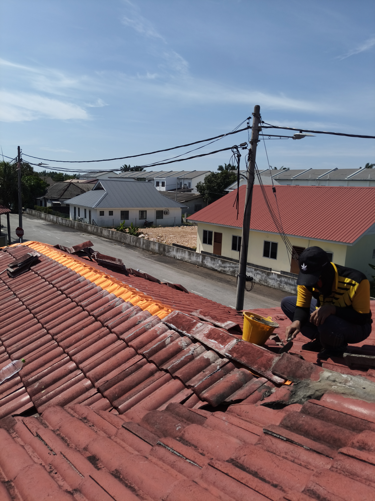

Kerja Baik Pulih Perabung Bumbung di Klang

Kami membuka genting di bahagian perabung bumbung dan membersihkan sisa simen lama. Selepas memasang lapisan pelindung di sepanjang sambungan, kami memasang semula genting perabung. Gambar ini menunjukkan proses pemasangan semula.